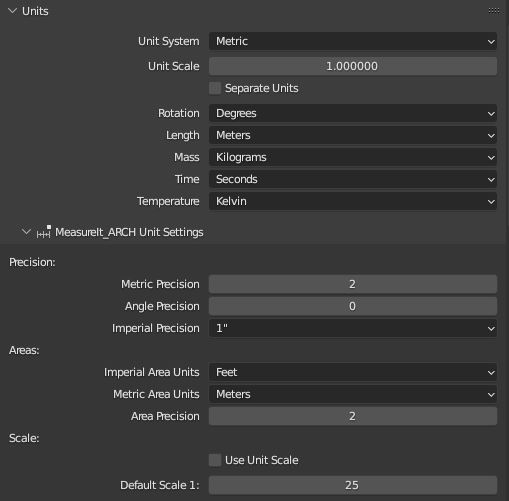

MeasureIt_ARCH Unit Settings
MeasureIt_ARCH unit settings are found in the scene properties panel, under the Blender's normal units panel. MeasureIt_ARCH uses Blender's unit setting by default, but adds a few additional formating options.
Note
Unit Overrides can also be specified per dimension for Aligned, Axis, and Area Dimensions if you want to mix unit systems in the same file. Mixing unit systems is generally not reccomended, but for some countries (Looking at you Canada) where building codes use metric and construction standards use imperial, having both available can be handy.

Precision
-
Metric Precision: Defines the number of decimal places included in dimensions when using the Metric Unit System.
-
Angle Precision: Defines the number of decimal places included in angle dimensions.
-
Imperial Precision: Fractional Precision to be used when using the Imperial Unit System.
Areas
-
Imperial Area Units: Units to use for Imperial Areas (sq ft, acres, hectares)
-
Metric Area Units: Units to use for Metric Areas
-
Metric Area Precision: Units to use for Metric Areas
Scale
-
Use Unit Scale: If enabled, dimensions will account for the Unit Scale factor set in Blender's unit panel
-
Default Scale: Scale used for text size if no view has been defined.